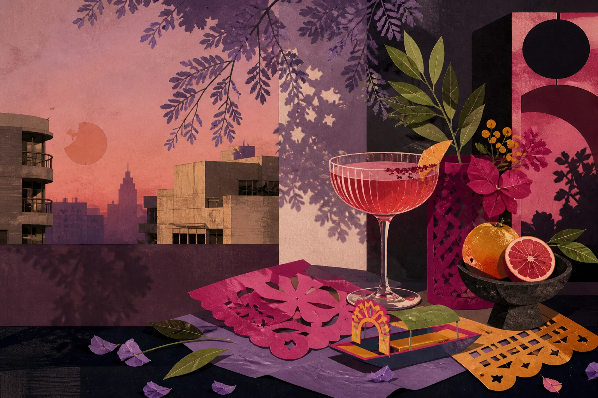

Mexico City / Sep 4-7, 2026 / 13 of us
Canals, cocktails, one dress-up dinner, and plenty of room to explore. Optional stops are always your call.

Rain is possible throughout the weekend, with the heaviest showers currently expected Friday and Saturday. Saturday includes four hours on an open boat, so rain gear is essential. Storms often arrive as a hard afternoon or evening burst and clear quickly; mornings are usually brighter. Forecast checked Aug 30 and likely to shift before we fly.
Arrive, settle in, and let the first evening stay easy.
Drop your bags, choose a bed, and make yourself at home.
Aditya lands at 1:20 PM. If you're in earlier, wander into Condesa or Roma for dinner; both are easy from the house.
Canals in the morning, a proper reset in the afternoon, then dress up for dinner and a night out.
Panadería Rosetta and Odette, ordered in. Coffee and something sweet before the drive.
Allow 45-60 minutes depending on traffic. Please be ready at 8:00 so we reach the boat before its 9:00 departure.
Four hours with Humedalia: a canal ride, floating farms, and farm-to-table brunch on the water. This is the quieter side of Xochimilco, not the party-boat version.
Take the afternoon to nap, shower, and eat before a late night. If you still want to wander, Parque México and Avenida Amsterdam are a few minutes from the house.
Chef Rodrigo is cooking a vegan-friendly private dinner and birthday dessert at the house. This is our formal-ish moment: nice attire, like a going-out look.
Our first drinks after dinner, with cocktails and tacos for anyone who somehow still has room.
A modern cantina from the Handshake Speakeasy team, with serious cocktails in a looser room. There is a DJ and space to dance.
If the group wants another stop, these lean into salsa, cumbia, son, bachata, reggaetón, and Latin pop rather than house music.
Brunch together, explore in smaller groups, then regroup for a casual dinner and cocktails.
Our group brunch in Roma, with an Italian-leaning menu and two tables side by side.
From roughly 12:30 to 6:00, choose the part of the city that sounds best and explore in smaller groups. Each route heads in a different direction, so staying within one area will leave more time for the fun part.
Chapultepec · 10-15 min west
Centro · 20-30 min northeast
Roma & Condesa · on foot
Coyoacán · 35 min south, the committed option
Try any three of six with your group. Extra credit is real and will be acknowledged.
A casual Sunday dinner of tacos and mezcal in a lively open-air Roma courtyard. Come as you are after the afternoon's adventures.
A Japanese-influenced cocktail bar recognized among North America's 50 Best. This stop is for drinks and snacks, not another dinner.
An experimental cocktail bar back in Roma, reserved for whichever six people still want one more stop.
Sunday has fewer late options, but these keep the music on the Latin and Mexican side rather than house.
One last brunch, then everyone scatters.
One last brunch for whoever is still in town. Anish and Maddie fly earlier, so this is a smaller table by design.
The cleaners arrive at 11, so the house needs to be clear.
Not scheduled, just good. Slot them in wherever they fit.
Everyone is in. Say what shape you want, pick how much chaos, and draw.
Tap a name to sit someone out; the × removes them for good. Changes stay on this phone.
Happy birthday, Chhaya